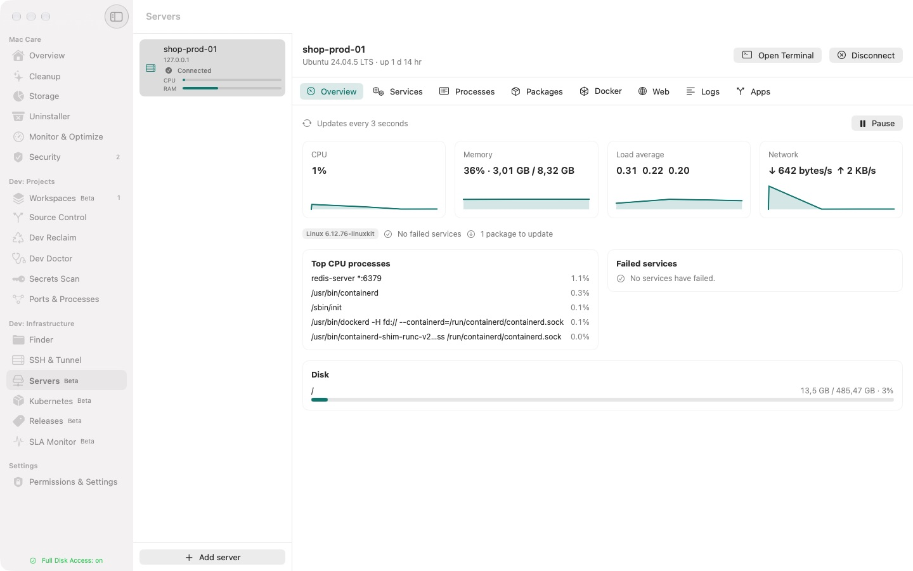

A calmer Mac for people who ship.
Clear caches and old build folders, see what holds a port, and find leaked keys. All on your Mac.
Or install and update with one Terminal command:
curl -fsSL https://andyphan0508.github.io/calmdeck/install.sh | bash
Careful by design.
- Runs entirely on your Mac, with no analytics and no tracking.
- Shows a summary and asks for Touch ID before anything is deleted.
- Secret values stay masked and never leave your Mac.
Early Preview: every Pro feature is free until 1 July 2027. Requires a Mac with Apple silicon (M1 or later) and macOS 26 or later.
Built for the work you do every day.





Simple pricing.
Free
0 US$
- Scan everything
- Cleanup and Dev Reclaim up to 2 GB a day
- Local Git
- One workspace
- Command Palette navigation
Pro
29 US$once
For two Macs. One year of updates included.
Early Preview: every Pro feature is free until 1 July 2027.
- Unlimited cleanup and Dev Reclaim
- One-tap fixes
- AI commit messages on device
- Pull requests, issues and CI in the app
- Unlimited workspaces
Use your version forever. Renew updates for 15 US$ a year if you want them. Extra Mac: 9 US$.
Founder price: 19 US$ instead of 29 US$ until 15 July 2027. The FOUNDER code applies automatically at checkout.
Secure checkout with cards, PayPal or Apple Pay. 14-day money-back guarantee.
In Vietnam: pay 390,000 ₫ by VietQR inside the app, and your license activates automatically.
Is this a subscription?
No. Pro is a one-time purchase of 29 US$. You keep the version you bought forever, and the first year of updates is included.
What happens after the first year?
The app keeps working and nothing is locked. If you want new versions, you can renew updates for 15 US$ a year. Renewal is optional.
Can I move my license to a new Mac?
Yes. One license covers two Macs. Deactivate one in the app, then activate the new one. A third Mac costs 9 US$.
What if my old Mac is lost?
Contact us and we will free that seat so you can activate your replacement.
Does Calmdeck send my data anywhere?
No. Calmdeck runs entirely on your Mac, including the AI that writes commit messages, with no analytics and no tracking. To verify your license, the app sends only your license key to our licensing service.
Will it delete something important?
Not without your confirmation. Each item is labelled by risk, running apps are protected, and every deletion shows a summary and asks for Touch ID first.
What do I need to run it?
macOS 26 or later and about 6 MB of disk space. The interface comes in English and Vietnamese.
How do I install it?
Fastest: run the one-line install command at the top of this page in Terminal. It downloads the latest release from GitHub, checks the signature and copies the app to Applications; run it again to update. With the DMG: drag Calmdeck into Applications and open it. Calmdeck is not yet notarized by Apple, so macOS blocks the first launch; open System Settings › Privacy & Security and click Open Anyway.